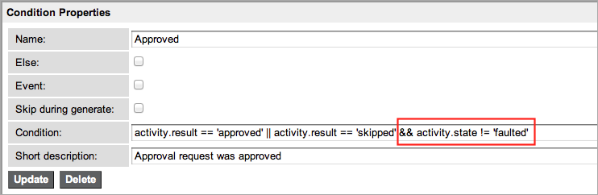

Workflow Error Handling
| |
Note: This article applies to Fuji. For more current information, see Workflow Error Handling at http://docs.servicenow.com
The ServiceNow Wiki is no longer being updated. Please refer to http://docs.servicenow.com for the latest product documentation. |
Contents
1 Overview
The personalized JavaScript that users create in workflow activity variables is vulnerable to run-time syntax errors. In the base system, workflow activities do not provide condition routing on the error state. As a result, the workflow progresses based on the state of the current record. For example, a workflow contains an Approval - User activity that uses an advanced script to add additional approvers. A syntax error in the script results in no approvers being added. Because a state of no approvers is a valid return, even without the syntax error, the approval activity is skipped and the workflow progresses along a positive path. However, this might not be a valid response for the workflow designer who does not want the workflow to progress along the positive path without approvers.
Workflow error handling detects and logs syntax errors and provides a state that the workflow designer can use to add error conditions to the workflow. Use error handling to locate syntax errors in advanced script fields for these workflow activities:
- Approval - User
- Approval - Group
- Catalog Task
- Create Task
- If
- Run Script
- Notification
2 Available Error Information
The following information is available in a pop-up when you point to a workflow activity in an error state. The table also shows which activities support error exits.
| Activity | Workflow Log | Red Error Indicator | Activity State | Activity Result | Fault Description | Reroute on Error |
|---|---|---|---|---|---|---|
| Approval - User
Approval - Group |
Yes | Yes | Error | Skipped | Yes | Yes |
| Catalog Task
Create Task |
Yes | No | Finished | none | No | No |
| If | Yes | Yes | Error | none | Yes | Yes |
| Run Script | No | Yes | Error | error | Yes | Yes |
| Notification | Yes | Yes | Error | error | Yes | Yes |
3 Tracking Errors
Without error handling, error detection is very difficult, making a workflow hard to troubleshoot. Error handling provides visual cues within the workflow, error descriptions for activities in pop-ups, and detailed log records.
3.1 Banners
Look for an activity with a red banner, indicating that a syntax error has occurred in a script field. All activities that provide error handling, with the exception of Catalog Task and Create Task, display a red banner for this error.
3.2 Pop-ups
Point to the activity displaying a red banner to view information about the error. A pop-up box shows the State and Result of the activity and provides a brief Fault Description (except for task activities). Note that this approval continued as skipped despite the error given in the fault description. See the table in this page for the information available to each activity.
3.3 Execution Order
Hover text in the Workflow Context graphical view displays the Execution order of individual activities, which assists in troubleshooting. To view the order in which a workflow activity was executed:
- Navigate to Workflow > Live Workflows > Active Contexts or All Contexts.
- Open the context you want to examine.
- Click Show Workflow.
- Hover the cursor over a finished or executing activity.
- A popup box appears, showing error data, execution time, and the order in which that activity executed in the workflow. You can use this data to help troubleshoot activities in an error state.


3.4 Workflow Log
View the log in the Workflow Context form for more information about the syntax error in the activity. Since task activities do not display a red banner when a syntax error has occurred, you must view the log if you suspect the workflow has not run properly. Examine the error description in the log, and then inspect the script in the activity named in the log. To view the activity by name, navigate to Workflow > Administration > Properties and enable the debug property.
In this example, an activity named Manager approval (Approval - User) contains a script that is missing a semi-colon.

4 Creating Error Condition Exits
The administrator can reroute the workflow when a script error occurs by creating an error condition exit for specific activities within the workflow. This allows the workflow to process script errors in a predictable way and not create undesirable results.
- Open the workflow and make sure it is checked out.
- Right-click in the top portion of the activity for which you want to create an error exit.
- Select Add condition from the context menu.
- Add a condition exit with the following values:
- Name: Error
- Condition: activity.state=='faulted'
- Click Submit.
- The Error exit appears on the activity.
- Connect the Error exit to another activity for handling the error state, such as Notification or Log Message.

{kind=link}
{kind=link}
{kind=link}
{kind=link}
4.1 Reconfiguring Approval Conditions
Approval activities react differently to script errors than the other activities. These errors can prevent an approval from being processed successfully, causing it to complete as Skipped, which can appear to be an Approved state. To prevent this from happening, reconfigure the Approved exit as follows:
- Open an approval workflow and make sure it is checked out.
- Double-click the Approved exit on an approval activity.
- Add the following script to the Condition field:
- && activity.state != 'faulted'
- This prevents the activity from continuing down the normal path in an error state and ensures that Skipped or Approved is the desired state.
- 
- Click Update.
{kind=link}